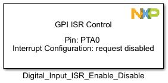
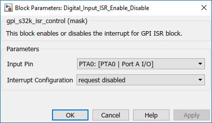

GPIO Interrupt Enable/Disable Block
The main functionality of the block is to enable/disable PORT pin interrupts.
Block Image
Inputs:
- None
Outputs:
- None
Parameters and Dialog Box
Input Pin
Selects Input Pin to use. For usability the Input Pin selection is displayed as: (Port Name : [Function : Description]) format.
Interrupt Configuration
Configures the PORT interrupt type:
- request disabled
- when logic 0
- on rising-edge
- on falling-edge
- on either-edge
- when logic 1
Block Dependency
- None
Block Miscellaneous Details
- None